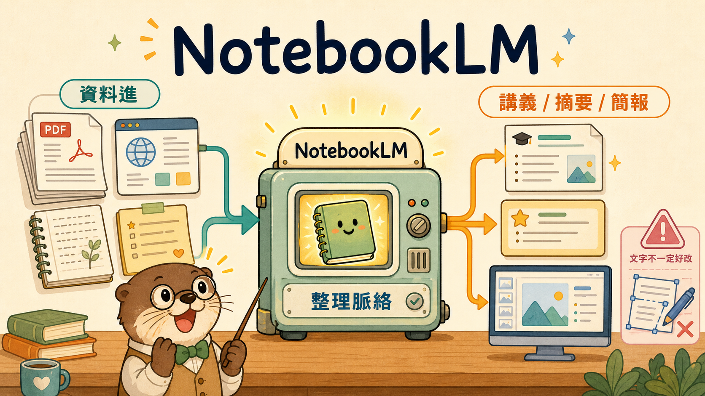
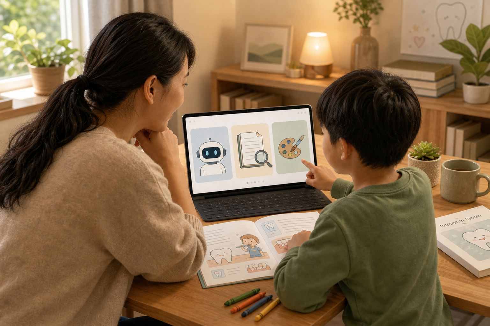
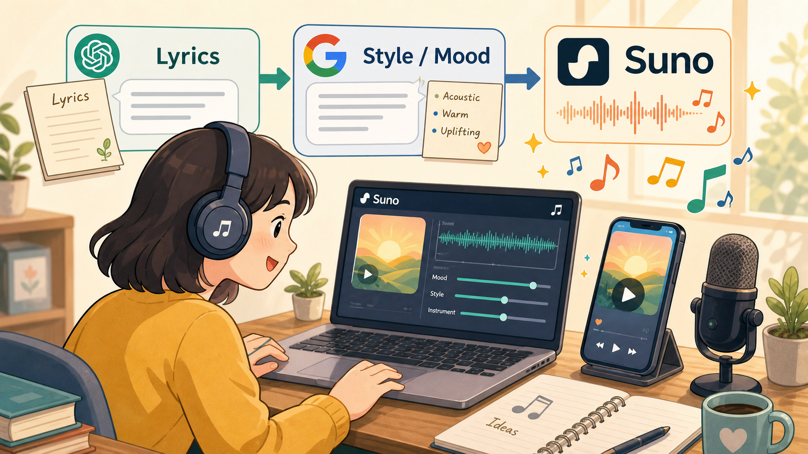

<!DOCTYPE html>
<html lang="zh-Hant">
  <head>
    <meta charset="UTF-8" />
    <meta name="viewport" content="width=device-width, initial-scale=1.0" />
    <title>AI 新手村</title>
    <link rel="preconnect" href="https://fonts.googleapis.com" />
    <link rel="preconnect" href="https://fonts.gstatic.com" crossorigin />
    <link
      href="https://fonts.googleapis.com/css2?family=Noto+Sans+TC:wght@400;500;700;900&family=Noto+Serif+TC:wght@600;700;900&family=Newsreader:opsz,wght@6..72,600;6..72,700&display=swap"
      rel="stylesheet"
    />
    <link rel="stylesheet" href="./styles.css" />
  </head>
  <body>
    <div class="motion-field" aria-hidden="true">
      <span class="chalk-orbit orbit-one"></span>
      <span class="chalk-orbit orbit-two"></span>
      <span class="chalk-line line-one"></span>
      <span class="chalk-line line-two"></span>
    </div>
    <button class="mobile-menu-toggle" id="mobile-menu-toggle" aria-label="開啟選單">
      <span></span><span></span><span></span>
    </button>
    <div class="sidebar-overlay" id="sidebar-overlay"></div>

    <div class="layout-shell">
      <aside class="sidebar" id="sidebar">
        <header class="brand-block">
          <div class="brand-mark">AI</div>
          <div>
            <h1>AI 新手村</h1>
            <p>上課來不及抄，回家照著做</p>
          </div>
        </header>

        <div class="side-focus">
          <p>不用先變大神。今天先做出一個能交差、能修改、能拿去用的版本。</p>
        </div>

        <nav class="course-nav" aria-label="課程單元">
          <button class="nav-link active" data-page="overview"><span>01</span>先抓手感</button>
          <button class="nav-link" data-page="clinic"><span>02</span>做衛教素材</button>
          <button class="nav-link" data-page="family"><span>03</span>親子共學</button>
          <button class="nav-link" data-page="knowledge"><span>04</span>整理專業資料</button>
          <button class="nav-link" data-page="suno"><span>05</span>Suno 做音樂</button>
          <button class="nav-link" data-page="radar"><span>06</span>追 AI 新知</button>
        </nav>

        <footer class="side-note">
          <p>這不是工具百科。這是上完課還能回來找步驟的工作桌。</p>
          <p class="side-credit">Made by Huang Chun-Yin</p>
        </footer>
      </aside>

      <main class="reader">
        <div id="content-display" class="reader-inner"></div>
      </main>
    </div>

    <script src="https://cdn.jsdelivr.net/npm/gsap@3.12.5/dist/gsap.min.js"></script>
    <script src="https://cdn.jsdelivr.net/npm/gsap@3.12.5/dist/ScrollTrigger.min.js"></script>
    <script>
      const CONTENT = {
        overview: {
          title: "先抓手感",
          subtitle: "先不要想太多。先拿它做一件你今天就用得上的事。",
          body: `
            <section class="hero-section">
              <div class="hero-copy">
                <h2>工具會一直變，但會不會用，關鍵還是在你怎麼交代事情。這個先抓到，後面就差很多。</h2>
                <p>這堂課不走炫技路線，也不是要你回家背一堆名詞。比較實際的目標是：你今天看完，回去真的能做出一份衛教、一本童書、一份簡報，或一段可以拿來用的音樂。先做出來，後面才有得修。</p>
                <div class="button-row">
                  <a class="button primary" href="#clinic" data-jump="clinic">先做一份衛教</a>
                  <a class="button secondary" href="#radar" data-jump="radar">看看去哪追新東西</a>
                </div>
              </div>
              <figure class="feature-figure">
                
                <figcaption>不用先學完全部工具。先從眼前真的會用到的事開始，反而比較容易學得進去。</figcaption>
              </figure>
            </section>

            <section class="lesson-block">
              <h3>課程開場影片</h3>
              <p>這支影片適合先看。看完之後，再進到各單元操作，會比較容易知道每個工具大概放在哪裡。</p>
              <div class="embedded-video">
                <video controls preload="metadata" poster="./media/YouTube封面_AI新手懶人包.png">
                  <source src="./media/video/ai-newbie-village-intro.mp4" type="video/mp4" />
                </video>
              </div>
            </section>

            <section class="lesson-block">
              <h3>新手心法</h3>
              <ol class="step-list">
                <li>先從樂趣或痛點下手。你最常遇到什麼麻煩，就先拿那件事來試。</li>
                <li>不要期待打一段話就直接畢業。它很好用，但不會通靈。</li>
                <li>現在順手的方法，幾個月後可能就換了，所以不用把自己綁死在某一種做法。</li>
                <li>最快的學法通常不是一直旁聽，而是自己真的去用。先用免費版試，再決定要不要訂閱。</li>
                <li>今天介紹的是比較容易上手的路，不代表只有這一條路；只是它比較適合新手先建立手感。</li>
              </ol>
            </section>

            <section class="lesson-block">
              <h3>先記住三個安全原則</h3>
              <ol class="step-list">
                <li>不要上傳真實病人的姓名、病歷號、電話、完整影像，或任何能辨識身分的資料。</li>
                <li>AI 產出的醫療內容只能當初稿，最後一定要由專業人員自己審稿。</li>
                <li>遇到診斷、治療決策、藥物、法律責任相關內容，不要直接照 AI 答案執行。</li>
              </ol>
            </section>

            <section class="lesson-block">
              <h3>今天主要會用到哪些工具</h3>
              <figure class="inline-figure">
                
                <figcaption>最容易起步的通常是網頁版對話工具；手上已經有資料來源時，再交給 NotebookLM 會更有感。</figcaption>
              </figure>
              <div class="definition-table">
                <div><strong>ChatGPT</strong><span>適合把想法講清楚、改文案、做圖片，也能直接幫你輸出可下載的文件或簡報。</span></div>
                <div><strong>Gemini</strong><span>也是網頁版對話工具，和 Google 文件、雲端硬碟整合比較近。</span></div>
                <div><strong>NotebookLM</strong><span>當你手上已經有 PDF、網站、文件或 YouTube 影片，想把資料整理成摘要、題目、簡報或學習材料時，很值得用。</span></div>
                <div><strong>Codex</strong><span>它比較像全能助理，能幫忙整理網站、腳本、素材、流程與執行步驟。</span></div>
              </div>
            </section>

            <section class="lesson-block">
              <h3>新手常先看的三家</h3>
              <p>以下資訊以 <strong>2026 年 5 月 20 日</strong> 可查到的官方資料為準。台灣使用者如果刷的是美元方案，實際金額還會受匯率與海外交易手續費影響。</p>
              <div class="pricing-grid">
                <article>
                  <h4>ChatGPT</h4>
                  <p class="plan-chip">最萬用</p>
                  <p class="plan-price">免費版 / Plus US$20 起</p>
                  <ul class="compact-points">
                    <li>文字、圖片、檔案、腦力活都能包。</li>
                    <li>什麼都想先試一輪的人，很適合從這裡開始。</li>
                    <li>如果只想先訂一個，通常最不容易後悔。</li>
                  </ul>
                </article>
                <article>
                  <h4>Gemini + NotebookLM</h4>
                  <p class="plan-chip">最順手</p>
                  <p class="plan-price">免費版 / Google AI Pro</p>
                  <ul class="compact-points">
                    <li>本來就常用 Gmail、Docs、Drive 的人，上手會很快。</li>
                    <li>NotebookLM 很適合整理資料、做摘要、做簡報。</li>
                    <li>想把 AI 跟 Google 生態一起用，這組很省力。</li>
                  </ul>
                </article>
                <article>
                  <h4>Claude</h4>
                  <p class="plan-chip">最會寫</p>
                  <p class="plan-price">免費版 / Pro US$20 起</p>
                  <ul class="compact-points">
                    <li>長文整理、寫作、深度對話的口碑一直很好。</li>
                    <li>工程圈很愛拿它處理程式和文件。</li>
                    <li>這堂課不把它當主角，但知道它強在哪裡就夠了。</li>
                  </ul>
                </article>
              </div>
              <p class="small-note">如果你現在還在試水溫，就先用免費版做一次完整流程。真的開始常用、常卡額度，再升級就好。</p>
            </section>

            <section class="lesson-block">
              <h3>免費版和訂閱版，差別通常在哪裡</h3>
              <div class="comparison">
                <article>
                  <h4>免費版</h4>
                  <p>適合先試水溫、偶爾用、先確認自己到底會拿它做什麼。</p>
                </article>
                <article>
                  <h4>訂閱版</h4>
                  <p>通常會有更高額度、更穩定速度、較新的模型，以及更完整的圖片、研究、檔案分析或整合功能。</p>
                </article>
                <article>
                  <h4>什麼時候該升級</h4>
                  <p>當你已經開始真的拿來做工作，而且常常卡在額度、速度、檔案限制或功能鎖住時，再訂閱最划算。</p>
                </article>
                <article>
                  <h4>什麼時候先不要急</h4>
                  <p>如果你還不知道自己真正會用在哪裡，就先把用途找出來，不用一開始就急著付錢。</p>
                </article>
              </div>
            </section>

            <section class="lesson-block">
              <h3>Prompt、Skills、Harness 可以怎麼理解</h3>
              <figure class="inline-figure">
                
                <figcaption>同一個人、同一套工具，交代得越清楚、工具接得越完整，成品通常就越穩。</figcaption>
              </figure>
              <div class="definition-table">
                <div><strong>Prompt</strong><span>像你交代助理的工作單。你講得越清楚，AI 越知道要往哪裡做。</span></div>
                <div><strong>Skills</strong><span>像已經練熟的專長或現成做法。不是每次從零開始，而是直接套用一種成熟的處理方式。</span></div>
                <div><strong>Harness</strong><span>可以把它想成工作規則和工作桌。它會幫 AI 接上檔案、工具、資料夾、流程，讓 AI 不只是聊天，而是真的能做事。</span></div>
              </div>
              <p class="small-note">所以大家之後如果覺得 AI 有時很強、有時很鈍，很多時候不是模型忽然變笨，而是你交代的任務、資料來源、工具邊界還不夠清楚。</p>
            </section>

            <section class="lesson-block">
              <h3>這個開場影片，是怎麼做出來的</h3>
              <figure class="inline-figure">
                
                <figcaption>不是一句話就整支長出來，而是先想內容，再交給不同工具接力完成。</figcaption>
              </figure>
              <div class="definition-table">
                <div><strong>先有人決定方向</strong><span>先想清楚：這是要講給誰聽、要講到多細、希望觀眾看完記住什麼。</span></div>
                <div><strong>再用 AI 幫忙拆工作</strong><span>像 ChatGPT、Gemini、NotebookLM 可以幫忙整理內容；Codex 比較像全能助理，能把網站、腳本、素材整理成可執行的版本。</span></div>
                <div><strong>最後再組成作品</strong><span>圖片、文字、字幕、配音、影片，不是同一個按鈕一次完成，而是一步一步接起來。</span></div>
              </div>
            </section>
          `,
        },
        clinic: {
          title: "衛教素材製作",
          subtitle: "這一段重點很單純：把現場真的會用到的衛教素材做出來。",
          body: `
            <section class="hero-section compact">
              <div>
                <h2>不要只做一張漂亮圖。真正有用的，是病人看得懂、同事拿得到、你下次還找得到的那種素材。</h2>
                <p>這裡會帶你做出可下載的 <strong>PDF</strong>、<strong>DOCX</strong>、<strong>PPTX</strong>，還有搭配的 <strong>PNG</strong> 圖。做法盡量走直線，回家比較好重做。</p>
              </div>
              <figure class="feature-figure">
                
                <figcaption>先把內容整理對，再讓工具直接輸出你要下載的格式，最後補一張搭配圖。</figcaption>
              </figure>
            </section>

            <section class="lesson-block">
              <h3>先讓 ChatGPT 直接產出可下載的衛教文件</h3>
              <div class="definition-table">
                <div><strong>貼到哪裡</strong><span>ChatGPT 網頁版對話框。</span></div>
                <div><strong>要做出什麼</strong><span>直接要求它輸出可下載的 PDF、DOCX 或 PPTX，不一定要自己再貼一次。</span></div>
                <div><strong>實作觀念</strong><span>如果你把格式、對象、版面需求講清楚，ChatGPT 可以直接幫你生成適合下載與分享的成品。</span></div>
              </div>
              <div class="prompt-panel">
                <div class="prompt-head">
                  <div>
                    <strong>具體例子：生成可下載的衛教 PDF / DOCX / PPTX</strong>
                    <span>這段可以直接貼到 ChatGPT，再要求它產出對應檔案。</span>
                  </div>
                  <button class="copy-button" data-copy-target="clinicWordPrompt">複製</button>
                </div>
                <pre id="clinicWordPrompt" class="prompt-card">請幫我製作一份主題為「術後居家照護注意事項」的衛教素材，對象是第一次接受治療、容易緊張的成人。

請同時幫我完成這四種輸出：
1. 一份 A4 單張版的 PDF 內容
2. 一份可編輯的 DOCX 版內容
3. 一份 5 頁內的衛教簡報 PPTX 內容
4. 一段 120 字內的 LINE 傳訊短版

請用繁體中文，語氣溫和、專業、不恐嚇。
內容請包含：
- 治療後 24 小時內的注意事項
- 正常反應與需要回診的差別
- 飲食提醒
- 清潔方式
- 何時該主動聯絡醫療人員

排版要求：
- 標題要清楚
- 文字要短句
- 重點條列化
- 不要像論文
- 不要用太多專有名詞

如果可以直接產出可下載檔案，請幫我生成 PDF、DOCX、PPTX 三種版本。</pre>
              </div>
              <p class="small-note">如果生成的不是你要的檔案格式，就再補一句：<strong>「請直接幫我輸出可下載的 DOCX / PDF / PPTX 檔案。」</strong></p>
            </section>

            <section class="lesson-block">
              <h3>如果你手上本來就有資料，先交給 NotebookLM 整理</h3>
              <div class="definition-table">
                <div><strong>貼到哪裡</strong><span>可以先手動上傳資料，也可以用 Deep Research / Discover Sources 幫你找主題資料。</span></div>
                <div><strong>什麼時候用</strong><span>當你手上已經有學會講義、文獻、衛教網站，或想先讓它自己找資料再整理。</span></div>
              </div>
              <div class="prompt-panel">
                <div class="prompt-head">
                  <div>
                    <strong>具體例子：先蒐集再整理術後居家照護重點</strong>
                    <span>可以先丟自己的資料，或請 NotebookLM 幫你找資料後再整理。</span>
                  </div>
                  <button class="copy-button" data-copy-target="clinicNotebookPrompt">複製</button>
                </div>
                <pre id="clinicNotebookPrompt" class="prompt-card">請幫我整理「術後居家照護注意事項」的衛教重點。
如果目前資料不夠，請先用可信來源幫我補足，再整理。

請輸出：
1. 五個最重要的衛教重點
2. 三個一般民眾最容易誤解的地方
3. 一段白話開場
4. 四個適合做成衛教單張的小標題
5. 一個「什麼情況需要主動聯絡醫療人員」區塊

請把所有內容寫成台灣民眾容易理解的繁體中文，不要用太多專有名詞。
如果來源資料裡有彼此矛盾的地方，請另外標出來。</pre>
              </div>
            </section>

            <section class="lesson-block">
              <h3>再做一張搭配的衛教圖片</h3>
              <div class="definition-table">
                <div><strong>貼到哪裡</strong><span>ChatGPT 或 Gemini 的圖片生成功能。</span></div>
                <div><strong>適合做什麼</strong><span>門診公共螢幕圖、Canva 草稿、社群貼圖、衛教海報概念圖。</span></div>
                <div><strong>先提醒</strong><span>AI 圖片比較適合做視覺輔助與草稿，不建議直接拿來當高品質印刷成品而完全不修。</span></div>
              </div>
              <div class="prompt-panel">
                <div class="prompt-head">
                  <div>
                    <strong>具體例子：術後居家照護注意事項海報圖</strong>
                    <span>這段重點在風格和構圖，不要只寫主題名稱。</span>
                  </div>
                  <button class="copy-button" data-copy-target="clinicImagePrompt">複製</button>
                </div>
                <pre id="clinicImagePrompt" class="prompt-card">請生成一張「術後居家照護注意事項」衛教海報的主視覺。
風格：溫柔醫療感、日系留白、乾淨雜誌風、柔和奶油白背景、低飽和藍綠色系、專業但不冰冷。
畫面元素：醫療人員與病人簡單互動、四個注意事項的小圖示區塊。
構圖：直式海報比例。
要求：不要誇張 3D，不要過多小字，不要商業廣告感。</pre>
              </div>
            </section>

            <section class="lesson-block">
              <h3>網路上常見、也很受歡迎的 10 種海報風格</h3>
              <p>下面這 10 種，是目前網路上常被拿來做簡報或海報的方向。你不用一次全學，先挑一種最接近你的場合就好。</p>
              <div class="style-grid">
                <article><strong>1. 日系留白雜誌風</strong><span>乾淨、輕、舒服，適合醫療和教育。</span></article>
                <article><strong>2. 溫柔醫療極簡風</strong><span>低飽和藍綠、線條簡潔，適合衛教與教育素材。</span></article>
                <article><strong>3. 現代報紙風</strong><span>像報刊專題，標題清楚，資訊分區強。</span></article>
                <article><strong>4. 瑞士網格排版風</strong><span>規整、理性、資訊層級清楚，適合專業簡報。</span></article>
                <article><strong>5. 拼貼撕紙風</strong><span>比較有生活感和話題感，適合親子與社群。</span></article>
                <article><strong>6. 暖色生活風</strong><span>比較有人味，適合家長、生活教育、親子內容。</span></article>
                <article><strong>7. 蠟筆童書風</strong><span>適合孩子教材與共讀主題。</span></article>
                <article><strong>8. 大標題資訊圖風</strong><span>標題大、圖示明顯，適合門診牆面或快速閱讀。</span></article>
                <article><strong>9. 現代復古字體風</strong><span>字體有個性，但仍保有專業感。</span></article>
                <article><strong>10. 分層故事版面風</strong><span>有步驟感，適合教學流程與主題式內容。</span></article>
              </div>
              <p class="small-note">你可以把這些風格名稱直接寫進圖片 prompt 試試看，或先讓 AI 一次給你三種不同風格比較。</p>
            </section>

            <section class="lesson-block">
              <h3>如果成品不滿意就繼續修</h3>
              <p>很多做得很穩的老師和創作者，修 prompt 的方式其實很像：不要整段打掉重來，而是一次只改一兩個條件。這樣比較容易知道哪個改動真的有效。</p>
              <ul class="clean-list">
                <li>先改對象：例如把「一般民眾」改成「第一次接受治療、容易緊張的成人」。</li>
                <li>再改使用情境：LINE、A4、門診牆面、Canva 海報，輸出會差很多。</li>
                <li>加上不想要的感覺：例如「不要恐嚇、不要像廣告、不要像診斷書」。</li>
                <li>要求一次給三個版本：你比較容易挑出自己喜歡的方向。</li>
                <li>請 AI 先自我檢查：例如「請找出這份內容最容易讓一般民眾誤解的三句話」。</li>
                <li>如果是圖片不滿意，就只改構圖、風格、色系或留白，不要每次把整段 prompt 全換掉。</li>
              </ul>
            </section>
          `,
        },
        family: {
          title: "親子共學",
          subtitle: "這一段不是替孩子做功課，是幫大人更快把教材整理好。",
          body: `
            <section class="hero-section compact">
              <div>
                <h2>親子共學最怕不是沒內容，是內容太硬、孩子一看就關機。AI 在這裡最有價值的，就是幫你把東西講得比較好懂。</h2>
                <p>很多時候不用做得很複雜。先把主題講清楚，再補幾題、再做成故事或圖文頁，通常就很夠用了。</p>
              </div>
              <figure class="feature-figure">
                
                <figcaption>先把抽象內容講簡單，再做題目、做主題教材，孩子比較容易進狀況。</figcaption>
              </figure>
            </section>

            <section class="lesson-block">
              <h3>應用：用 NotebookLM 做主題式測驗</h3>
              <div class="definition-table">
                <div><strong>貼到哪裡</strong><span>NotebookLM 對話區。</span></div>
                <div><strong>資料怎麼來</strong><span>可以手動放資料，也可以先用 Deep Research 或 Discover Sources 搜尋主題資料，不一定要自己慢慢蒐集。</span></div>
                <div><strong>適合主題</strong><span>例如太陽系、昆蟲、海洋、歷史人物、植物、天氣、生活習慣。</span></div>
              </div>
              <div class="prompt-panel">
                <div class="prompt-head">
                  <div>
                    <strong>具體例子：太陽系主題小測驗</strong>
                    <span>沒有資料時，也可以先叫它幫你找資料再出題。</span>
                  </div>
                  <button class="copy-button" data-copy-target="familyQuizPrompt">複製</button>
                </div>
                <pre id="familyQuizPrompt" class="prompt-card">請幫我整理「太陽系」主題，目標是國小三到四年級孩子。
請輸出：
1. 5 題選擇題
2. 3 題是非題
3. 2 題簡答題
4. 每題正確答案
5. 每題用一句白話說明為什麼這是答案

請讓題目有由淺到深的順序，語氣友善，不要故意刁難孩子。</pre>
              </div>
            </section>

            <section class="lesson-block">
              <h3>應用：如何做童書</h3>
              <div class="definition-table">
                <div><strong>貼到哪裡</strong><span>NotebookLM 對話區或 Slide Deck 功能。</span></div>
                <div><strong>資料怎麼來</strong><span>可以自己放資料，也可以先用 Deep Research / Discover Sources 搜尋主題資料。</span></div>
                <div><strong>比較好的主題</strong><span>像是「為什麼會下雨」「蜜蜂怎麼幫助花授粉」「四季怎麼變化」這種孩子有感的題目。</span></div>
              </div>
              <figure class="inline-figure">
                
                <figcaption>先有主題資料，再指定語氣與視覺感，做出來的童書會穩很多。</figcaption>
              </figure>
              <div class="prompt-panel">
                <div class="prompt-head">
                  <div>
                    <strong>具體例子：為什麼會下雨</strong>
                    <span>這段不指定頁數，讓 NotebookLM 自己安排節奏。</span>
                  </div>
                  <button class="copy-button" data-copy-target="familyStoryPrompt">複製</button>
                </div>
                <pre id="familyStoryPrompt" class="prompt-card">請幫我做一份給小學生和家長共讀的童書式簡報，主題是「為什麼會下雨」。
請使用繁體中文，語氣像故事老師說故事，內容要簡單、溫暖、容易懂。
每一頁都要有清楚標題，正文不要太長，盡量讓孩子可以跟著圖和短句理解。

畫面風格請走：
- 蠟筆手繪感
- 暖白紙張背景
- 色彩明亮但不刺眼
- 裝飾可以有雲朵、太陽、雨滴、彩虹、小樹，但不要太滿

如果某些概念比較抽象，請先用生活比喻再解釋。</pre>
              </div>
            </section>

            <section class="lesson-block soft-callout">
              <h3>很多老師常用的帶法</h3>
              <p>把抽象概念變成比喻、先請孩子猜、不要一次講太多、最後做小測驗確認，這些都是很常見也很有效的教學節奏。AI 最適合幫家長加速準備這種材料，而不是把孩子的功課整份做掉。</p>
            </section>
          `,
        },
        knowledge: {
          title: "專業知識整理",
          subtitle: "這一段是在教你把資料變成能拿去講、拿去教、拿去整理的東西。",
          body: `
            <section class="hero-section compact">
              <div>
                <h2>手上已經有 PDF、網站、講義或逐字稿的時候，NotebookLM 才是真的有感。</h2>
                <p>它很適合把現成資料整理成摘要、問答、簡報和題目。重點不是神奇，是省你很多重複整理的時間。</p>
              </div>
              <figure class="feature-figure">
                
                <figcaption>把來源資料整理進來之後，NotebookLM 可以直接做出能拿來上的版本。</figcaption>
              </figure>
            </section>

            <section class="lesson-block">
              <h3>先在哪裡做</h3>
              <div class="definition-table">
                <div><strong>第 1 步</strong><span>打開 NotebookLM，建立新的 notebook。</span></div>
                <div><strong>第 2 步</strong><span>上傳 PDF、Google Docs、網站、YouTube，或用 Discover Sources、Fast Research、Deep Research 找資料。</span></div>
                <div><strong>第 3 步</strong><span>先問摘要與誤區，再讓它做簡報、問題或測驗，不要一開始就只顧外觀。</span></div>
              </div>
            </section>

            <section class="lesson-block">
              <h3>應用一：整理一篇文獻，變成教學重點</h3>
              <div class="prompt-panel">
                <div class="prompt-head">
                  <div>
                    <strong>貼到：NotebookLM 對話區</strong>
                    <span>前提是你已經把文獻或資料來源放進 notebook。</span>
                  </div>
                  <button class="copy-button" data-copy-target="knowledgeSummaryPrompt">複製</button>
                </div>
                <pre id="knowledgeSummaryPrompt" class="prompt-card">請根據我放進來的資料，整理成一份給非專科聽眾也能理解的教學內容。
請輸出：
1. 5 個核心重點
2. 3 個最容易誤解的地方
3. 5 個適合課堂討論的問題
4. 5 題課後測驗
5. 如果要講給學生聽，哪三段最值得先講</pre>
              </div>
            </section>

            <section class="lesson-block">
              <h3>應用二：做專業簡報</h3>
              <div class="definition-table">
                <div><strong>貼到哪裡</strong><span>NotebookLM 對話區，或搭配它的 Slide Deck 功能。</span></div>
                <div><strong>做出什麼</strong><span>可以直接做出一版能上場的簡報，不一定只把它當骨架生成器。</span></div>
                <div><strong>比較實際的做法</strong><span>可以下載後混合，挑最順眼、最正確的那幾張來用，NotebookLM 也可以線上對單張作個別修改。</span></div>
              </div>
              <div class="prompt-panel">
                <div class="prompt-head">
                  <div>
                    <strong>具體例子：把一篇慢性病照護文獻做成簡報</strong>
                    <span>這段適合教學、讀書會、院內分享。</span>
                  </div>
                  <button class="copy-button" data-copy-target="knowledgeSlidesPrompt">複製</button>
                </div>
                <pre id="knowledgeSlidesPrompt" class="prompt-card">請根據我放進來的慢性病照護文獻，生成一份適合 10 到 15 分鐘教學使用的簡報。

風格請走現代報紙感：
- 清楚欄位
- 強標題
- 大面積留白
- 像高品質專題報導
- 不要每頁塞滿文字
- 重要數據或結論要有視覺焦點

請讓整份簡報具備：
- 一個清楚的簡報標題
- 封面到結尾的完整頁面順序
- 每頁明確標題
- 每頁 3 個以內重點
- 哪幾頁適合放圖表、流程圖或案例圖
- 哪一頁最需要放慢解釋

請直接做成可用簡報，不要只給大綱。</pre>
              </div>
            </section>

            <section class="lesson-block">
              <h3>簡報風格可以自由發揮</h3>
              <p>NotebookLM 不只可以幫你整理內容，也可以直接做出可用的簡報版本。比較實際的做法，是用不同 style prompt 多做幾次，再把喜歡的頁面混合使用。像溫柔醫療風、研討會風、現代報紙風、教科書風、極簡大標題風都可以試。下面這份網路整理也很值得參考：</p>
              <p><a href="https://github.com/serenakeyitan/awesome-notebookLM-prompts?tab=readme-ov-file#modern-newspaper" target="_blank" rel="noreferrer">serenakeyitan / awesome-notebookLM-prompts / modern-newspaper</a></p>
              <figure class="inline-figure">
                
                <figcaption>NotebookLM 生成簡報時，prompt 很適合拿來描述整體風格、觀眾和重點，而不是寫得像逐頁施工單。</figcaption>
              </figure>
              <div class="prompt-panel">
                <div class="prompt-head">
                  <div>
                    <strong>如果你想指定風格，可以再補這一段</strong>
                    <span>把它接在上面的簡報 prompt 後面即可。</span>
                  </div>
                  <button class="copy-button" data-copy-target="knowledgeStylePrompt">複製</button>
                </div>
                <pre id="knowledgeStylePrompt" class="prompt-card">簡報風格請走現代報紙感：清楚欄位、強標題、適量留白、不要每頁都塞滿文字。
如果某一頁資訊很多，請優先幫我拆頁，不要硬塞在同一頁。</pre>
              </div>
            </section>

            <section class="lesson-block soft-callout">
              <h3>NotebookLM 最值得記住的幾件事</h3>
              <ul class="clean-list">
                <li>它很適合整理自己的來源資料，不是只靠空白聊天。</li>
                <li>它很適合做摘要、問答、簡報、測驗題。</li>
                <li>你可以一次生成多個簡報版本，挑好的、正確的直接拿來用，再針對單張細修。</li>
                <li>如果你想修語氣、修故事感、修講稿，通常還是回到 ChatGPT 或 Gemini 會比較順。</li>
              </ul>
            </section>
          `,
        },
        suno: {
          title: "AI 音樂創作 Suno",
          subtitle: "先把你想要的感覺講清楚，再丟給 Suno 做歌。",
          body: `
            <section class="hero-section compact">
              <div>
                <h2>Suno 比較像很會接球的編曲工具。你前面交代得越清楚，它後面越不容易亂跑。</h2>
                <p>對新手來說，最省力的做法通常不是進去一直亂按，而是先把歌詞、情緒、節奏和風格整理好，再貼進 <strong>Custom mode</strong>。這樣做出來的東西通常比較接近你心裡想的版本。</p>
              </div>
              <figure class="feature-figure">
                
                <figcaption>先把歌詞與風格說清楚，再進 Suno Custom mode，通常比只打一小句更容易得到接近自己想法的結果。</figcaption>
              </figure>
            </section>

            <section class="lesson-block">
              <h3>先知道在 Suno 裡要填什麼</h3>
              <div class="definition-table">
                <div><strong>Lyrics</strong><span>放完整歌詞，最好先有段落，例如 Verse、Chorus、Bridge，Suno 比較容易抓到歌曲結構。</span></div>
                <div><strong>Style / Mood</strong><span>放風格描述，例如曲風、節奏、情緒、樂器、聲線感覺。這部分不是在寫故事，而是在描述你想聽到的音樂樣子。</span></div>
                <div><strong>Title</strong><span>最後再補歌名。先把內容和風格做對，比歌名更重要。</span></div>
              </div>
              <p class="small-note">可以把 Suno 想成一位很會編曲的音樂製作人。歌詞是你想唱什麼，Style 是你想讓它聽起來像什麼。</p>
            </section>

            <section class="lesson-block">
              <h3>應用一：先用 ChatGPT 或 Gemini 幫你寫出 Suno 可用歌詞</h3>
              <div class="definition-table">
                <div><strong>貼到哪裡</strong><span>ChatGPT 或 Gemini 網頁版對話框。</span></div>
                <div><strong>適合誰</strong><span>想做主題歌、課程片頭、回憶感歌曲、生活紀錄歌，但不想從零自己寫完整歌詞的人。</span></div>
                <div><strong>完成後怎麼做</strong><span>把生成好的整段歌詞，直接貼到 Suno 的 Lyrics 欄位。</span></div>
              </div>
              <div class="prompt-panel">
                <div class="prompt-head">
                  <div>
                    <strong>具體例子：請 ChatGPT / Gemini 先寫 Suno 歌詞</strong>
                    <span>這段的目標，是直接拿到可貼進 Suno Lyrics 欄位的版本。</span>
                  </div>
                  <button class="copy-button" data-copy-target="sunoLyricsPrompt">複製</button>
                </div>
                <pre id="sunoLyricsPrompt" class="prompt-card">請幫我寫一首適合貼進 Suno Custom mode 的完整中文歌詞。

主題：忙碌醫護工作後，回到家終於能安靜喘一口氣
情緒：溫柔、療癒、帶一點疲憊後的釋放
語言：繁體中文
歌曲走向：主歌比較內斂，副歌要比較有抒發感

請直接輸出：
[Verse 1]
[Pre-Chorus]
[Chorus]
[Verse 2]
[Bridge]
[Final Chorus]

要求：
- 每段不要太長
- 用詞自然，不要像作文比賽
- 避免太多抽象空話
- 副歌要有一句容易記住、可以重複唱的核心句</pre>
              </div>
            </section>

            <section class="lesson-block">
              <h3>應用二：再請 ChatGPT 或 Gemini 幫你寫 Suno 的 Style / Mood</h3>
              <div class="definition-table">
                <div><strong>貼到哪裡</strong><span>ChatGPT 或 Gemini 網頁版對話框。</span></div>
                <div><strong>重點</strong><span>這段不是在重寫歌詞，而是在幫你整理 Suno 的風格描述，包含曲風、節奏、樂器、情緒、聲線。</span></div>
                <div><strong>完成後怎麼做</strong><span>把生成好的這一段，直接貼到 Suno 的 Style of Music 欄位。</span></div>
              </div>
              <div class="prompt-panel">
                <div class="prompt-head">
                  <div>
                    <strong>具體例子：請 ChatGPT / Gemini 先寫 Style</strong>
                    <span>完成後，把結果貼進 Suno 的 Style of Music 欄位。</span>
                  </div>
                  <button class="copy-button" data-copy-target="sunoStylePrompt">複製</button>
                </div>
                <pre id="sunoStylePrompt" class="prompt-card">請幫我寫一段適合貼進 Suno「Style of Music」欄位的風格描述。

我要的歌是：
- 溫暖療癒的流行民謠
- 女聲
- 中慢板
- 有鋼琴、木吉他、柔和鼓點
- 副歌要有往上打開的感覺
- 整體像夜晚回家後的放鬆、安心、帶一點希望

請直接輸出一段適合 Suno 使用的 style prompt。
不要解釋，直接給我可貼上的版本。</pre>
              </div>
            </section>

            <section class="lesson-block">
              <h3>應用三：把歌詞與風格一次整理好，讓流程更快</h3>
              <figure class="inline-figure">
                
                <figcaption>如果先把主題、情緒、聲線、樂器感講清楚，ChatGPT 或 Gemini 產出的內容通常更像一份可直接拿去用的創作草稿。</figcaption>
              </figure>
              <div class="prompt-panel">
                <div class="prompt-head">
                  <div>
                    <strong>具體例子：請 ChatGPT / Gemini 一次整理 Suno 套餐</strong>
                    <span>這段適合不想分兩次做的人。</span>
                  </div>
                  <button class="copy-button" data-copy-target="sunoBundlePrompt">複製</button>
                </div>
                <pre id="sunoBundlePrompt" class="prompt-card">請幫我製作一套可以直接拿去 Suno Custom mode 使用的內容。

主題：一位忙碌工作者在深夜回家，終於關掉訊息、慢慢安靜下來
想要的風格：溫暖流行、微電影感、女聲、中慢板、鋼琴加木吉他、情緒由疲憊走向鬆開

請分成兩段輸出：
1. Lyrics：直接用 [Verse]、[Chorus] 這種段落格式輸出
2. Style：輸出一段可以直接貼進 Suno 的 style prompt

要求：
- 歌詞要有畫面感
- 副歌要好記
- Style 要具體但不要太長
- 不要額外寫教學說明</pre>
              </div>
              <p class="small-note">如果第一次做出來不夠像，先不要急著整首重寫。先換情緒描述、節奏形容、樂器配置，通常就會明顯不一樣。</p>
            </section>

            <section class="lesson-block">
              <h3>作品示例</h3>
              <p>下面這支就是用 Suno 做出的歌曲影片。重點不是複製同一首歌，而是觀察：當歌詞和風格先講清楚之後，作品會比較快靠近自己心裡想像的樣子。</p>
              <div class="embedded-iframe">
                <iframe src="https://www.youtube.com/embed/3gexjqtPe6k" title="Suno 作品示例" loading="lazy" allow="accelerometer; autoplay; clipboard-write; encrypted-media; gyroscope; picture-in-picture; web-share" allowfullscreen></iframe>
              </div>
            </section>

            <section class="lesson-block">
              <h3>更多參考作品</h3>
              <p>如果想更快抓到 Suno 作品可以做到什麼程度，也可以直接看不同風格的成品。觀察旋律、配器、聲線和畫面氣質，通常會比只看說明更快建立感覺。</p>
              <div class="video-grid">
                <div class="embedded-iframe">
                  <iframe src="https://www.youtube.com/embed/laSoJOOmT9w" title="Suno 參考作品一" loading="lazy" allow="accelerometer; autoplay; clipboard-write; encrypted-media; gyroscope; picture-in-picture; web-share" allowfullscreen></iframe>
                </div>
                <div class="embedded-iframe">
                  <iframe src="https://www.youtube.com/embed/yss8anSnH58" title="Suno 參考作品二" loading="lazy" allow="accelerometer; autoplay; clipboard-write; encrypted-media; gyroscope; picture-in-picture; web-share" allowfullscreen></iframe>
                </div>
              </div>
            </section>

            <section class="lesson-block soft-callout">
              <h3>給新手的實際提醒</h3>
              <ul class="clean-list">
                <li>Suno 很吃「風格描述」的品質。歌詞寫得不差，但 Style 太空，歌很容易變得普通。</li>
                <li>同一份歌詞，可以反覆換 Style 試不同版本，這是很正常的做法。</li>
                <li>如果一開始不滿意，不要急著整首重寫，先改 Style、改副歌核心句、改節奏感，通常比較有效。</li>
              </ul>
            </section>
          `,
        },
        radar: {
          title: "AI 新知雷達",
          subtitle: "有興趣就去看看，不用每天追，也不用把自己搞得很累。",
          body: `
            <section class="hero-section compact radar-hero">
              <div>
                <h2>想知道最近又有什麼新東西，其實不用太用力。找幾個你看得下去的來源，偶爾逛一逛就夠了。</h2>
                <p>YouTube 適合看示範，X 這類社群適合看大家在聊什麼；如果你哪天真的起了興趣，再去 GitHub 挖寶也不遲。這一段先求有感，不求研究。</p>
              </div>
              <figure class="feature-figure radar-figure">
                
            </figure>
            </section>

            <section class="lesson-block">
              <h3>三個地方，輕鬆看就好</h3>
              <div class="definition-table">
                <div><strong>YouTube</strong><span>最適合新手。你可以直接看別人怎麼做、做出來像不像你要的。</span></div>
                <div><strong>X / 社群</strong><span>適合看最近大家在聊什麼。看到有趣的，再回頭找完整介紹就好。</span></div>
                <div><strong>GitHub</strong><span>把它當成寶藏庫就好。很多工具、範例、prompt 和整理文都藏在這裡，有興趣再慢慢逛。</span></div>
              </div>
            </section>

            <section class="lesson-block">
              <h3>GitHub 可以挖到什麼</h3>
              <div class="style-grid">
                <article><strong>工具清單</strong><span>很多人會整理「最近有哪些好用工具」，逛這種清單最不費力。</span></article>
                <article><strong>範例專案</strong><span>有些工具會附 demo，直接看成品和做法，比看規格更有感。</span></article>
                <article><strong>Prompt 整理</strong><span>像簡報、NotebookLM、Suno 這類主題，常常有人整理好一包可以參考的寫法。</span></article>
                <article><strong>教學文件</strong><span>如果你真的想多看一步，很多專案首頁都會附使用說明和範例。</span></article>
              </div>
            </section>

            <section class="lesson-block">
              <h3>新手比較輕鬆的做法</h3>
              <ul class="clean-list">
                <li>先從 YouTube 找你看得下去的創作者，不用一次追太多。</li>
                <li>在社群看到新東西時，先存起來，真的有興趣再回頭深入看。</li>
                <li>GitHub 先當成逛寶庫，不用一開始就研究怎麼用。</li>
                <li>重點不是追最前面，而是慢慢知道自己對哪一類工具有興趣。</li>
              </ul>
            </section>
          `,
        },
      };

      const contentDisplay = document.getElementById("content-display");
      const navItems = document.querySelectorAll(".nav-link");
      const mobileMenuToggle = document.getElementById("mobile-menu-toggle");
      const sidebar = document.getElementById("sidebar");
      const sidebarOverlay = document.getElementById("sidebar-overlay");
      let pageAnimationContext;

      function attachDynamicHandlers() {
        document.querySelectorAll(".prompt-panel").forEach((panel) => {
          if (panel.nextElementSibling?.classList?.contains("prompt-note")) return;
          const note = document.createElement("p");
          note.className = "prompt-note";
          note.textContent =
            "上面的 prompt 只是舉例，不是一定要這樣寫，也不一定是最好的版本。多試幾次、多換說法，通常會更容易找到適合自己的做法。";
          panel.insertAdjacentElement("afterend", note);
        });

        document.querySelectorAll("[data-jump]").forEach((el) => {
          el.addEventListener("click", (event) => {
            event.preventDefault();
            renderPage(el.dataset.jump);
          });
        });

        document.querySelectorAll(".copy-button").forEach((button) => {
          button.addEventListener("click", async () => {
            const target = document.getElementById(button.dataset.copyTarget);
            if (!target) return;
            try {
              await navigator.clipboard.writeText(target.textContent.trim());
              const original = button.textContent;
              button.textContent = "已複製";
              setTimeout(() => {
                button.textContent = original;
              }, 1400);
            } catch {
              button.textContent = "複製失敗";
            }
          });
        });
      }

      function runPageAnimations() {
        if (pageAnimationContext) pageAnimationContext.revert();
        if (!window.gsap) return;

        const reader = document.querySelector(".reader");
        const reduceMotion = window.matchMedia("(prefers-reduced-motion: reduce)").matches;
        if (window.ScrollTrigger) gsap.registerPlugin(ScrollTrigger);

        pageAnimationContext = gsap.context(() => {
          if (reduceMotion) {
            gsap.set(".page-header, .hero-section, .lesson-block, .prompt-panel, .feature-figure", { clearProps: "all" });
            return;
          }

          gsap.set(".page-header h1, .hero-section h2, .lesson-block h3", { "--marker-scale": 0 });

          gsap
            .timeline({ defaults: { ease: "expo.out" } })
            .from(".page-kicker", { y: 18, duration: 0.45 })
            .from(".page-header h1", { y: 42, rotateX: 7, transformOrigin: "50% 100%", duration: 0.82 }, "-=0.18")
            .to(".page-header h1", { "--marker-scale": 1, duration: 0.72, ease: "power2.out" }, "-=0.36")
            .from(".hero-section > *", { y: 28, duration: 0.62, stagger: 0.09 }, "-=0.42");

          if (window.ScrollTrigger) {
            gsap.utils.toArray(".lesson-block").forEach((block) => {
              const heading = block.querySelector("h3");
              gsap.from(block, {
                y: 34,
                duration: 0.66,
                ease: "power3.out",
                scrollTrigger: { trigger: block, scroller: reader, start: "top 86%", once: true },
              });
              if (heading) {
                gsap.to(heading, {
                  "--marker-scale": 1,
                  duration: 0.54,
                  ease: "power2.out",
                  scrollTrigger: { trigger: heading, scroller: reader, start: "top 82%", once: true },
                });
              }
            });

            gsap.utils.toArray(".definition-table, .style-grid, .comparison, .pricing-grid, .video-grid").forEach((group) => {
              gsap.from(group.querySelectorAll(":scope > *"), {
                y: 16,
                duration: 0.44,
                stagger: 0.045,
                ease: "power2.out",
                scrollTrigger: { trigger: group, scroller: reader, start: "top 86%", once: true },
              });
            });

            ScrollTrigger.refresh();
          }
        }, contentDisplay);
      }

      function attachAmbientMotion() {
        if (!window.gsap || window.matchMedia("(prefers-reduced-motion: reduce)").matches) return;
        gsap.to(".orbit-one", { x: 34, y: -24, rotate: 18, duration: 8, repeat: -1, yoyo: true, ease: "sine.inOut" });
        gsap.to(".orbit-two", { x: -42, y: 28, rotate: -14, duration: 10, repeat: -1, yoyo: true, ease: "sine.inOut" });

        document.querySelectorAll(".nav-link").forEach((item) => {
          const moveX = gsap.quickTo(item, "x", { duration: 0.28, ease: "power3.out" });
          item.addEventListener("pointermove", (event) => {
            const rect = item.getBoundingClientRect();
            moveX((event.clientX - rect.left - rect.width / 2) * 0.035);
          });
          item.addEventListener("pointerleave", () => moveX(0));
        });
      }

      function renderPage(key) {
        const page = CONTENT[key] || CONTENT.overview;
        contentDisplay.innerHTML = `
          <article class="lesson-page">
            <header class="page-header">
              <p class="page-kicker">${page.title}</p>
              <h1>${page.subtitle}</h1>
            </header>
            ${page.body}
            <footer class="page-footer">
              <p>提醒：AI 生成內容需要人工判斷。醫療、個資、費用與承諾性文字尤其要謹慎複核。</p>
              <p class="author-credit">AI 新手村由 Huang Chun-Yin 製作。</p>
              <p class="source-links">
                參考：<a href="https://openai.com/academy/prompting/" target="_blank" rel="noreferrer">OpenAI Prompting Fundamentals</a>、
                <a href="https://help.openai.com/en/articles/6950777-chatgpt-plus-" target="_blank" rel="noreferrer">ChatGPT Plus Help</a>、
                <a href="https://help.openai.com/en/articles/9793128-what-is-chatgpt-pro" target="_blank" rel="noreferrer">ChatGPT Pro Help</a>、
                <a href="https://one.google.com/about/google-ai-plans/" target="_blank" rel="noreferrer">Google One AI Plans</a>、
                <a href="https://blog.google/products-and-platforms/products/google-one/google-ai-subscriptions/" target="_blank" rel="noreferrer">Google AI 訂閱更新</a>、
                <a href="https://support.google.com/notebooklm/answer/16757456?hl=en" target="_blank" rel="noreferrer">NotebookLM Slide Deck Help</a>、
                <a href="https://support.google.com/notebooklm/answer/16215270" target="_blank" rel="noreferrer">NotebookLM Sources Help</a>、
                <a href="https://support.claude.com/en/articles/11049762-choose-a-claude-plan" target="_blank" rel="noreferrer">Claude Plan Guide</a>、
                <a href="https://www.anthropic.com/claude-code" target="_blank" rel="noreferrer">Claude Code</a>、
                <a href="https://help.suno.com/en/articles/3726721" target="_blank" rel="noreferrer">Suno Custom Mode</a>、
                <a href="https://help.suno.com/en/articles/2415873" target="_blank" rel="noreferrer">Suno Own Lyrics</a>、
                <a href="https://help.suno.com/en/articles/5782849" target="_blank" rel="noreferrer">Suno Detailed Style Instructions</a>、
                <a href="https://support.google.com/websearch/answer/4815696?hl=en" target="_blank" rel="noreferrer">Google Alerts</a>、
                <a href="https://www.edutopia.org/article/6-foundational-ways-to-scaffold-student-learning" target="_blank" rel="noreferrer">Edutopia Scaffolding</a>、
                <a href="https://www.edutopia.org/article/teaching-cte-students-use-ai/" target="_blank" rel="noreferrer">Edutopia AI as Tutor</a>、
                <a href="https://ai.google.dev/gemini-api/docs/prompting-strategies" target="_blank" rel="noreferrer">Google Prompting Strategies</a>、
                <a href="https://github.com/serenakeyitan/awesome-notebookLM-prompts?tab=readme-ov-file#modern-newspaper" target="_blank" rel="noreferrer">NotebookLM Prompt Examples</a>
              </p>
            </footer>
          </article>
        `;

        navItems.forEach((item) => item.classList.toggle("active", item.dataset.page === key));
        attachDynamicHandlers();
        runPageAnimations();
        sidebar.classList.remove("is-open");
        sidebarOverlay.classList.remove("is-visible");
        window.location.hash = key;
        document.querySelector(".reader").scrollTop = 0;
      }

      navItems.forEach((item) => item.addEventListener("click", () => renderPage(item.dataset.page)));

      mobileMenuToggle.addEventListener("click", () => {
        sidebar.classList.toggle("is-open");
        sidebarOverlay.classList.toggle("is-visible");
      });

      sidebarOverlay.addEventListener("click", () => {
        sidebar.classList.remove("is-open");
        sidebarOverlay.classList.remove("is-visible");
      });

      attachAmbientMotion();
      renderPage(window.location.hash.replace("#", "") || "overview");
    </script>
  </body>
</html>
